目次
3D Gaussian Splatting for Real-Time Radiance Field Rendering
Bernhard Kerbl*（Inria, Université Côte d'Azur, France）、Georgios Kopanas*（Inria, Université Côte d'Azur, France）、Thomas Leimkühler（Max-Planck-Institut für Informatik, Germany）、George Drettakis（Inria, Université Côte d'Azur, France）
arXiv:2308.04079v1 [cs.GR]、2023年8月8日
ACM Transactions on Graphics, Vol. 42, No. 4, Article 1（2023年8月）
翻訳について：原文 PDF は
42_3D_Gaussian_Splatting_2308.04079.pdf（全 14 ページ）。本文、図の説明、図中ラベル、表、脚注、付録を訳出し、論文タイトルと参考文献は原文のまま掲載。図は原図を掲載し、英語ラベルの日本語訳を併記した。数式・数値・引用番号・コードの識別子は原文を維持。原文の記述に関する補足は「訳注」と明示し、本文と区別している。
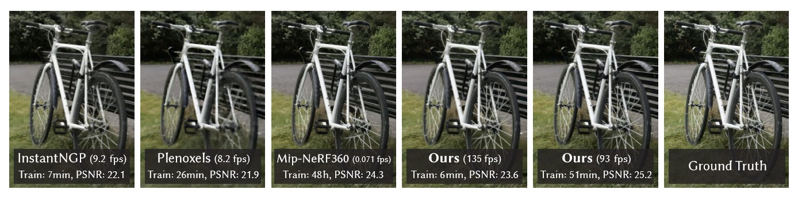
図1：本手法は、従来最高画質の手法［Barron et al. 2022］に匹敵する品質で放射輝度場の実時間レンダリングを実現しつつ、最適化に要する時間は従来の最速手法［Fridovich-Keil and Yu et al. 2022; Müller et al. 2022］と遜色ない。この性能の鍵は、新しい 3D ガウシアンによるシーン表現と実時間の微分可能レンダラを組み合わせたことにあり、これによりシーン最適化と新規視点合成の双方が大幅に高速化される。InstantNGP［Müller et al. 2022］と同程度の学習時間では本手法も同程度の品質となるが、それが InstantNGP の到達できる最高品質であるのに対し、本手法は 51 分学習することで最先端の品質に達し、Mip-NeRF360［Barron et al. 2022］をわずかに上回ることさえある。
図中ラベル：Ours＝本手法、Train＝学習時間、Ground Truth＝正解画像（真値）
要旨
放射輝度場（Radiance Field）手法は、複数の写真や動画で撮影されたシーンの新規視点合成に近年革命をもたらした。しかし、高い視覚品質を達成するには依然として学習とレンダリングのコストが高いニューラルネットワークが必要であり、一方で近年の高速な手法は必然的に速度と引き換えに品質を犠牲にしている。（孤立した物体ではなく）境界のない完全なシーンを 1080p 解像度でレンダリングする場合、実時間の表示レートを達成できる既存手法は存在しない。本論文では、競争力のある学習時間を維持しながら最先端の視覚品質を達成し、さらに重要な点として 1080p 解像度で高品質な実時間（≥ 30 fps）新規視点合成を可能にする 3 つの主要な要素を導入する。第一に、カメラキャリブレーションの過程で得られる疎な点群から出発して、シーンを 3D ガウシアンで表現する。これはシーン最適化に望ましい連続的な体積型放射輝度場の性質を保ちつつ、空の空間での不要な計算を回避する。第二に、3D ガウシアンの最適化と密度制御を交互に行い、特に異方性共分散を最適化することでシーンを正確に表現する。第三に、異方性スプラッティングをサポートし、学習を加速するとともに実時間レンダリングを可能にする、可視性を考慮した高速なレンダリングアルゴリズムを開発する。いくつかの確立されたデータセットにおいて、最先端の視覚品質と実時間レンダリングを実証する。
CCS の概念：• 計算方法論 → レンダリング；点ベースのモデル；ラスタライゼーション；機械学習的アプローチ。
脚注*：両著者は本論文に等しく貢献した。
著者の連絡先：Bernhard Kerbl, bernhard.kerbl@inria.fr, Inria, Université Côte d'Azur, France; Georgios Kopanas, georgios.kopanas@inria.fr, Inria, Université Côte d'Azur, France; Thomas Leimkühler, thomas.leimkuehler@mpi-inf.mpg.de, Max-Planck-Institut für Informatik, Germany; George Drettakis, george.drettakis@inria.fr, Inria, Université Côte d'Azur, France.
出版権は ACM に許諾されている。ACM は、本論文が国家政府の職員、契約者または関係者によって執筆または共同執筆されたことを認める。そのため、政府は政府目的に限り、本論文を出版または複製し、あるいは他者にそれを許可する非独占的かつ使用料無料の権利を保有する。© 2023 著作権は著者に帰属する。出版権は ACM に許諾。0730-0301/2023/8-ART1 $15.00 https://doi.org/10.1145/3592433
追加のキーワード・フレーズ：新規視点合成、放射輝度場、3D ガウシアン、実時間レンダリング
ACM 参照形式：Bernhard Kerbl, Georgios Kopanas, Thomas Leimkühler, and George Drettakis. 2023. 3D Gaussian Splatting for Real-Time Radiance Field Rendering. ACM Trans. Graph. 42, 4, Article 1 (August 2023), 14 pages. https://doi.org/10.1145/3592433
1 はじめに
メッシュと点は最も一般的な 3D シーン表現である。これらは明示的であり、GPU/CUDA ベースの高速なラスタライゼーションに適しているからである。対照的に、近年のニューラル放射輝度場（Neural Radiance Field; NeRF）手法は連続的なシーン表現に基づいており、典型的には、撮影されたシーンの新規視点合成のために体積レイマーチングを用いて多層パーセプトロン（MLP）を最適化する。同様に、これまでで最も効率的な放射輝度場の解法も、たとえばボクセル［Fridovich-Keil and Yu et al. 2022］やハッシュ［Müller et al. 2022］のグリッド、あるいは点［Xu et al. 2022］に格納された値を補間することで、連続的な表現に基づいている。これらの手法の連続性は最適化に役立つが、レンダリングに必要な確率的サンプリングはコストが高く、ノイズを生じうる。本論文では両者の長所を兼ね備えた新しいアプローチを導入する。本手法の 3D ガウシアン表現は、最先端（state-of-the-art; SOTA）の視覚品質と競争力のある学習時間での最適化を可能にし、タイルベースのスプラッティングによる解法は、既存のいくつかの公開データセット［Barron et al. 2022; Hedman et al. 2018; Knapitsch et al. 2017］において 1080p 解像度で SOTA 品質の実時間レンダリングを保証する（図1参照）。
我々の目標は、複数の写真で撮影されたシーンの実時間レンダリングを可能にし、かつ典型的な実シーンに対して従来の最も効率的な手法と同等に速い最適化時間で表現を作成することである。近年の手法は高速な学習を達成している［Fridovich-Keil and Yu et al. 2022; Müller et al. 2022］が、現在の SOTA NeRF 手法、すなわち最大 48 時間の学習時間を要する Mip-NeRF360［Barron et al. 2022］で得られる視覚品質を達成するには至っていない。高速だが品質の低い放射輝度場手法は、シーンによってはインタラクティブなレンダリング時間（毎秒 10〜15 フレーム）を達成できるが、高解像度での実時間レンダリングには及ばない。
本手法の解法は 3 つの主要な構成要素に基づく。まず、柔軟で表現力の高いシーン表現として 3D ガウシアンを導入する。入力は従来の NeRF 系手法と同じ、すなわち Structure-from-Motion（SfM）［Snavely et al. 2006］でキャリブレーションされたカメラであり、SfM の過程の一部として無償で得られる疎な点群で 3D ガウシアンの集合を初期化する。マルチビューステレオ（MVS）のデータを必要とするほとんどの点ベースの解法［Aliev et al. 2020; Kopanas et al. 2021; Rückert et al. 2022］とは対照的に、本手法は SfM の点のみを入力として高品質な結果を達成する。なお、NeRF-synthetic データセットについては、本手法はランダムな初期化でも高品質を達成する。3D ガウシアンが優れた選択であることを示す。3D ガウシアンは微分可能な体積表現であると同時に、2D へ投影して標準的な \(\alpha\) ブレンディングを適用することで、NeRF と等価な画像形成モデルを用いて非常に効率的にラスタライズすることもできるからである。本手法の第二の構成要素は、3D ガウシアンの属性（3D 位置、不透明度 \(\alpha\)、異方性共分散、球面調和関数（SH）係数）の最適化であり、これは最適化中に 3D ガウシアンを追加し、時に除去する適応的密度制御のステップと交互に行われる。この最適化手順により、シーンの適度にコンパクトで、非構造的かつ精密な表現が得られる（テストしたすべてのシーンで 100 万〜500 万個のガウシアン）。本手法の第三にして最後の要素は実時間レンダリングの解法であり、高速な GPU ソートアルゴリズムを用い、近年の研究［Lassner and Zollhofer 2021］に倣ってタイルベースのラスタライゼーションに着想を得ている。ただし 3D ガウシアン表現のおかげで、ソートと \(\alpha\) ブレンディングにより可視性の順序を尊重した異方性スプラッティングを行うことができ、また必要な数だけソート済みスプラットの走査を追跡することで高速かつ正確な逆伝播を可能にする。
まとめると、本論文の貢献は以下のとおりである。
- 放射輝度場の高品質かつ非構造的な表現としての異方性 3D ガウシアンの導入。
- 撮影シーンに対して高品質な表現を生成する、適応的密度制御と交互に行う 3D ガウシアン属性の最適化手法。
- 可視性を考慮し、異方性スプラッティングと高速な逆伝播を可能にして高品質な新規視点合成を実現する、GPU 向けの高速な微分可能レンダリング手法。
既存の公開データセットでの結果は、多視点撮影から 3D ガウシアンを最適化し、従来の最高品質の陰的放射輝度場手法と同等以上の品質を達成できることを示している。また、最速の手法と同程度の学習速度と品質を達成でき、さらに重要な点として、新規視点合成において初めて高品質な実時間レンダリングを提供する。
2 関連研究
まず従来の再構成手法を簡単に概観し、次に点ベースのレンダリングと放射輝度場の研究について、それらの類似性を議論しながら述べる。放射輝度場は広大な分野であるため、直接関連する研究のみに焦点を当てる。分野全体を網羅するには、近年の優れたサーベイ［Tewari et al. 2022; Xie et al. 2022］を参照されたい。
2.1 従来のシーン再構成とレンダリング
最初の新規視点合成手法はライトフィールドに基づくものであり、当初は密にサンプリングされたもの［Gortler et al. 1996; Levoy and Hanrahan 1996］であったが、その後非構造的な撮影が可能になった［Buehler et al. 2001］。Structure-from-Motion（SfM）［Snavely et al. 2006］の登場により、写真の集合を用いて新規視点を合成できるという全く新しい領域が開かれた。SfM はカメラキャリブレーションの際に疎な点群を推定し、これは当初 3D 空間の単純な可視化に用いられていた。その後のマルチビューステレオ（MVS）は、長年にわたって印象的な完全 3D 再構成アルゴリズムを生み出し［Goesele et al. 2007］、いくつかの視点合成アルゴリズムの開発を可能にした［Chaurasia et al. 2013; Eisemann et al. 2008; Hedman et al. 2018; Kopanas et al. 2021］。これらの手法はいずれも入力画像を新規視点カメラへ再投影してブレンドし、その再投影を導くためにジオメトリを用いる。これらの手法は多くの場合優れた結果を生んだが、典型的には、再構成されなかった領域や、MVS が存在しないジオメトリを生成する「過剰再構成」から完全には回復できない。近年のニューラルレンダリングアルゴリズム［Tewari et al. 2022］はこうしたアーティファクトを大幅に減らし、すべての入力画像を GPU に格納する膨大なコストを回避して、ほとんどの面でこれらの手法を上回っている。
2.2 ニューラルレンダリングと放射輝度場
深層学習の技術は新規視点合成に早くから採用された［Flynn et al. 2016; Zhou et al. 2016］。CNN はブレンディングの重みの推定［Hedman et al. 2018］や、テクスチャ空間での解法［Riegler and Koltun 2020; Thies et al. 2019］に用いられた。これらの手法の多くにとって MVS ベースのジオメトリを用いることが大きな欠点であり、加えて最終的なレンダリングに CNN を用いると、しばしば時間的なちらつきが生じる。
新規視点合成のための体積表現は Soft3D［Penner and Zhang 2017］によって始められた。その後、ジオメトリを表現するための連続的で微分可能な密度場に基づき、深層学習技術と体積レイマーチングを組み合わせた手法が提案された［Henzler et al. 2019; Sitzmann et al. 2019］。体積レイマーチングを用いたレンダリングは、ボリュームに問い合わせるために必要なサンプル数が多いため、大きなコストがかかる。Neural Radiance Fields（NeRF）［Mildenhall et al. 2020］は品質向上のために重点サンプリングと位置エンコーディングを導入したが、大規模な多層パーセプトロンを用いたため速度に悪影響を及ぼした。NeRF の成功は、品質と速度に取り組む後続手法の爆発的な増加をもたらし、それらはしばしば正則化戦略を導入している。新規視点合成の画質における現在の最先端は Mip-NeRF360［Barron et al. 2022］である。そのレンダリング品質は卓越しているが、学習とレンダリングの時間は依然として極めて長い。本手法はこの品質に匹敵し、場合によってはそれを上回りつつ、高速な学習と実時間レンダリングを提供できる。
最新の手法は、主に 3 つの設計上の選択を活用することで、学習および／またはレンダリングの高速化に焦点を当ててきた。すなわち、体積レイマーチングの際に補間される（ニューラル）特徴を格納するための空間データ構造の利用、異なるエンコーディング、そして MLP の容量である。このような手法には、空間離散化のさまざまな変種［Chen et al. 2022b,a; Fridovich-Keil and Yu et al. 2022; Garbin et al. 2021; Hedman et al. 2021; Reiser et al. 2021; Takikawa et al. 2021; Wu et al. 2022; Yu et al. 2021］、コードブック［Takikawa et al. 2022］、ハッシュテーブルのようなエンコーディング［Müller et al. 2022］が含まれ、これらによりより小さな MLP を用いること、あるいはニューラルネットワークを完全に排除すること［Fridovich-Keil and Yu et al. 2022; Sun et al. 2022］が可能になる。
これらの手法のうち最も注目すべきは、計算を加速するためにハッシュグリッドと占有グリッドを用い、密度と見えを表現するためにより小さな MLP を用いる InstantNGP［Müller et al. 2022］と、連続的な密度場を補間するために疎なボクセルグリッドを用い、ニューラルネットワークを完全に排除できる Plenoxels［Fridovich-Keil and Yu et al. 2022］である。いずれも球面調和関数に依存しており、前者は方向依存の効果を直接表現するために、後者は色ネットワークへの入力をエンコードするためにこれを用いる。（訳注：原文の記述どおり訳したが、実際には Plenoxels が SH で方向依存の効果を直接表現し、InstantNGP が色ネットワークへの入力の符号化に SH を用いるため、「前者」「後者」が逆になっていると考えられる。）どちらも卓越した結果をもたらすが、これらの手法は、シーンや撮影の種類にも一部依存して、空の空間を効果的に表現するのに依然として苦労することがある。加えて、画質は加速のために用いる構造化グリッドの選択によって大きく制限され、レンダリング速度は、あるレイマーチングのステップにおいて多くのサンプルに問い合わせる必要があることによって妨げられる。本手法で用いる非構造的かつ明示的で GPU に適した 3D ガウシアンは、ニューラルな構成要素なしで、より高速なレンダリング速度とより良い品質を達成する。
2.3 点ベースのレンダリングと放射輝度場
点ベースの手法は、互いに接続されていない非構造的なジオメトリのサンプル（すなわち点群）を効率的にレンダリングする［Gross and Pfister 2011］。最も単純な形式では、点サンプルレンダリング［Grossman and Dally 1998］は固定サイズの非構造的な点の集合をラスタライズし、その際にグラフィックス API がネイティブにサポートする点の型［Sainz and Pajarola 2004］や GPU 上での並列ソフトウェアラスタライゼーション［Laine and Karras 2011; Schütz et al. 2022］を利用できる。点サンプルレンダリングは元のデータには忠実であるが、穴が生じ、エイリアシングを引き起こし、厳密に不連続である。高品質な点ベースのレンダリングに関する先駆的な研究は、ピクセルより大きな広がりをもつ点プリミティブ、たとえば円形または楕円形の円盤、楕円体、サーフェル（surfel）を「スプラッティング」することでこれらの問題に対処している［Botsch et al. 2005; Pfister et al. 2000; Ren et al. 2002; Zwicker et al. 2001b］。
近年、微分可能な点ベースのレンダリング技術に関心が集まっている［Wiles et al. 2020; Yifan et al. 2019］。点にニューラル特徴を付加して CNN でレンダリングすることで、高速あるいは実時間の視点合成が実現されている［Aliev et al. 2020; Rückert et al. 2022］。しかし、これらは依然として初期ジオメトリを MVS に依存しており、そのためそのアーティファクト、とりわけ特徴の乏しい領域や光沢のある領域、細い構造などの難しいケースにおける過剰再構成や過少再構成を受け継いでいる。
点ベースの \(\alpha\) ブレンディングと NeRF 型の体積レンダリングは、本質的に同じ画像形成モデルを共有している。具体的には、色 \(C\) はレイに沿った体積レンダリングによって次のように与えられる。
\[ C=\sum_{i=1}^{N} T_i\left(1-\exp(-\sigma_i\delta_i)\right)\mathbf{c}_i \quad \text{with} \quad T_i=\exp\left(-\sum_{j=1}^{i-1}\sigma_j\delta_j\right), \tag{1} \]
ここで、密度 \(\sigma\)、透過率 \(T\)、色 \(\mathbf{c}\) のサンプルは、レイに沿って間隔 \(\delta_i\) で取られる。これは次のように書き直すことができる。
\[ C=\sum_{i=1}^{N} T_i\alpha_i\mathbf{c}_i, \tag{2} \]
ただし
\[ \alpha_i=\left(1-\exp(-\sigma_i\delta_i)\right) \quad \text{and} \quad T_i=\prod_{j=1}^{i-1}(1-\alpha_i). \]
（訳注：積の中の \((1-\alpha_i)\) は、添え字の整合から \((1-\alpha_j)\) の誤植と考えられる。）
典型的なニューラル点ベースの手法（たとえば［Kopanas et al. 2022, 2021］）は、ピクセルに重なる順序付けられた \(\mathcal{N}\) 個の点をブレンドすることで、ピクセルの色 \(C\) を計算する。
\[ C=\sum_{i\in\mathcal{N}} c_i\alpha_i\prod_{j=1}^{i-1}(1-\alpha_j), \tag{3} \]
ここで \(\mathbf{c}_i\) は各点の色であり、\(\alpha_i\) は共分散 \(\Sigma\) をもつ 2D ガウシアン［Yifan et al. 2019］を評価した値に、学習された点ごとの不透明度を掛けることで与えられる。
式 2 と式 3 から、画像形成モデルが同じであることは明らかである。しかし、レンダリングアルゴリズムは大きく異なる。NeRF は空の空間／占有された空間を陰的に表現する連続的な表現であり、式 2 のサンプルを見つけるためにコストの高いランダムサンプリングが必要となり、その結果ノイズと計算コストが生じる。対照的に、点は非構造的で離散的な表現であり、NeRF と同様にジオメトリの生成、破棄、移動を可能にする十分な柔軟性をもつ。これは、従来研究［Kopanas et al. 2021］で示されたように不透明度と位置を最適化することで実現され、完全な体積表現の欠点を回避できる。
Pulsar［Lassner and Zollhofer 2021］は高速な球のラスタライゼーションを実現しており、これは本手法のタイルベースかつソートを用いるレンダラに着想を与えた。しかし上記の分析を踏まえ、体積表現の利点を得るために、ソートされたスプラットに対する（近似的な）従来型の \(\alpha\) ブレンディングを維持したい。本手法のラスタライゼーションは、Pulsar の順序非依存の手法とは対照的に、可視性の順序を尊重する。さらに、ピクセル内のすべてのスプラットに勾配を逆伝播し、異方性スプラットをラスタライズする。これらの要素はすべて、本手法の結果の高い視覚品質に寄与している（7.3 節参照）。加えて、上述の従来手法はレンダリングに CNN も用いており、その結果時間的な不安定性が生じる。それでも、Pulsar［Lassner and Zollhofer 2021］と ADOP［Rückert et al. 2022］のレンダリング速度は、本手法の高速なレンダリング解法を開発する動機となった。
鏡面反射の効果に焦点を当てつつ、Neural Point Catacaustics［Kopanas et al. 2022］の拡散反射の点ベースレンダリングの経路は、MLP を用いることでこの時間的な不安定性を克服しているが、依然として入力として MVS ジオメトリを必要としていた。この分類における最新の手法［Zhang et al. 2022］は MVS を必要とせず、方向について SH も用いている。しかし、1 つの物体からなるシーンしか扱えず、初期化にマスクを必要とする。小さな解像度と少ない点数では高速であるが、典型的なデータセット［Barron et al. 2022; Hedman et al. 2018; Knapitsch et al. 2017］のシーンにどのようにスケールできるかは不明である。本手法は、より柔軟なシーン表現のために 3D ガウシアンを用いることで MVS ジオメトリの必要性を回避し、投影されたガウシアンのためのタイルベースのレンダリングアルゴリズムによって実時間レンダリングを達成する。
近年の手法［Xu et al. 2022］は、放射基底関数のアプローチを用いて、点で放射輝度場を表現している。最適化中に点の枝刈りと高密度化の技術を用いるが、体積レイマーチングを用いるため実時間の表示レートを達成できない。
人物パフォーマンスキャプチャの分野では、撮影された人体を表現するために 3D ガウシアンが用いられてきた［Rhodin et al. 2015; Stoll et al. 2011］。より最近では、視覚タスクのために体積レイマーチングと組み合わせて用いられている［Wang et al. 2023］。同様の文脈でニューラル体積プリミティブも提案されている［Lombardi et al. 2021］。これらの手法はシーン表現として 3D ガウシアンを選択するきっかけとなったが、単一の孤立した物体（人体や顔）を再構成・レンダリングするという特定のケースに焦点を当てており、その結果シーンの深度複雑度は小さい。対照的に、本手法の異方性共分散の最適化、最適化と密度制御の交互実行、およびレンダリングのための効率的な深度ソートにより、屋内・屋外を問わず、背景を含み、深度複雑度の大きい完全で複雑なシーンを扱うことができる。
3 概要
本手法の入力は、静的なシーンの画像の集合と、SfM［Schönberger and Frahm 2016］によってキャリブレーションされた対応するカメラであり、SfM は副産物として疎な点群を生成する。これらの点から、位置（平均）、共分散行列、不透明度 \(\alpha\) によって定義される 3D ガウシアンの集合を作成し（4 節）、これにより非常に柔軟な最適化が可能になる。これにより 3D シーンの適度にコンパクトな表現が得られる。その理由の一つは、高度に異方的な体積スプラットを用いて細かい構造をコンパクトに表現できることである。放射輝度場の方向依存の見えの成分（色）は、標準的な慣行［Fridovich-Keil and Yu et al. 2022; Müller et al. 2022］に従い、球面調和関数（SH）によって表現される。本アルゴリズムは、3D ガウシアンのパラメータ、すなわち位置、共分散、\(\alpha\)、SH 係数の一連の最適化ステップを、ガウシアンの密度を適応的に制御する操作と交互に行うことで、放射輝度場の表現を作成する（5 節）。本手法の効率の鍵はタイルベースのラスタライザ（6 節）であり、高速なソートのおかげで可視性の順序を尊重しつつ異方性スプラットの \(\alpha\) ブレンディングを可能にする。この高速なラスタライザ（訳注：原文は「Out fast rasterizer」で、「Our」の誤植と考えられる）は、累積した \(\alpha\) 値を追跡することによる高速な逆伝播も備えており、勾配を受け取ることのできるガウシアンの数に制限はない。本手法の概要を図2に示す。
4 微分可能な 3D ガウシアンスプラッティング
我々の目標は、法線をもたない疎な（SfM の）点の集合から出発して、高品質な新規視点合成を可能にするシーン表現を最適化することである。そのためには、微分可能な体積表現の性質を受け継ぎつつ、同時に非構造的かつ明示的で非常に高速なレンダリングを可能にするプリミティブが必要である。我々は 3D ガウシアンを選択する。3D ガウシアンは微分可能であり、2D スプラットへ容易に投影できるため、レンダリングに高速な \(\alpha\) ブレンディングを用いることができる。
本手法の表現は、2D の点を用い、各点を法線をもつ小さな平面円と仮定する従来手法［Kopanas et al. 2021; Yifan et al. 2019］と類似点がある。SfM の点は極めて疎であるため、法線を推定するのは非常に難しい。同様に、そのような推定から得られる非常にノイズの多い法線を最適化することも非常に困難である。そこで我々は、ジオメトリを法線を必要としない 3D ガウシアンの集合としてモデル化する。本手法のガウシアンは、点（平均）\(\mu\) を中心とし、ワールド空間で定義された完全な 3D 共分散行列 \(\Sigma\)［Zwicker et al. 2001a］によって定義される。
\[ G(x)=e^{-\frac{1}{2}(x)^T\Sigma^{-1}(x)} \tag{4} \]
このガウシアンは、ブレンディング処理において \(\alpha\) と掛け合わされる。（訳注：式 4 は平均 \(\mu\) を中心とするガウシアンとしては \(x\) を \(x-\mu\) と書くべきところであり、平均を原点にとった局所座標での表記と解される。）
しかし、レンダリングのためには 3D ガウシアンを 2D に投影する必要がある。Zwicker ら［2001a］は、この画像空間への投影を行う方法を示している。ビュー変換 \(W\) が与えられたとき、カメラ座標における共分散行列 \(\Sigma'\) は次のように与えられる。
\[ \Sigma'=JW\,\Sigma\,W^TJ^T \tag{5} \]
ここで \(J\) は射影変換のアフィン近似のヤコビアンである。Zwicker ら［2001a］は、\(\Sigma'\) の 3 行目と 3 列目を除くと、従来研究［Kopanas et al. 2021］のように法線をもつ平面上の点から出発した場合と同じ構造と性質をもつ 2×2 の分散行列が得られることも示している。
明白なアプローチは、放射輝度場を表現する 3D ガウシアンを得るために共分散行列 \(\Sigma\) を直接最適化することであろう。しかし、共分散行列は半正定値である場合にのみ物理的な意味をもつ。すべてのパラメータの最適化には勾配降下法を用いるが、勾配降下法はそのような有効な行列を生成するよう容易に制約することができず、更新ステップと勾配によって無効な共分散行列が非常に容易に生じうる。
その結果、我々は最適化のために、より直感的でありながら同等の表現力をもつ表現を採用した。3D ガウシアンの共分散行列 \(\Sigma\) は、楕円体の形状を記述することに相当する。スケーリング行列 \(S\) と回転行列 \(R\) が与えられれば、対応する \(\Sigma\) を求めることができる。
\[ \Sigma=RSS^TR^T \tag{6} \]
両方の因子を独立に最適化できるように、これらを別々に格納する。すなわち、スケーリングのための 3D ベクトル \(s\) と、回転を表す四元数 \(q\) である。これらはそれぞれの行列へ容易に変換して合成でき、その際 \(q\) を正規化して有効な単位四元数が得られるようにする。
学習中の自動微分による大きなオーバーヘッドを避けるため、すべてのパラメータの勾配を明示的に導出する。正確な微分計算の詳細は付録 A にある。
最適化に適したこの異方性共分散の表現により、撮影シーン中のさまざまな形状のジオメトリに適応するよう 3D ガウシアンを最適化でき、かなりコンパクトな表現が得られる。図3はそのような例を示している。
5 3D ガウシアンの適応的密度制御を伴う最適化
本手法の中核は最適化ステップであり、自由視点合成のためにシーンを正確に表現する 3D ガウシアンの密な集合を作成する。位置 \(p\)、\(\alpha\)、共分散 \(\Sigma\) に加えて、シーンの視点依存の見えを正しく捉えるために、各ガウシアンの色 \(c\) を表す SH 係数も最適化する。これらのパラメータの最適化は、シーンをより良く表現するためにガウシアンの密度を制御するステップと交互に行われる。
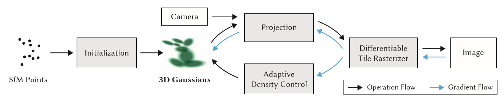
図2：最適化は疎な SfM 点群から始まり、3D ガウシアンの集合を作成する。次に、このガウシアン集合を最適化し、その密度を適応的に制御する。最適化の間は本手法の高速なタイルベースレンダラを用いるため、SOTA の高速な放射輝度場手法と比べて遜色ない学習時間が得られる。学習後は、本手法のレンダラにより多種多様なシーンを実時間でナビゲーションできる。
図中ラベル：SfM Points＝SfM 点、Initialization＝初期化、3D Gaussians＝3D ガウシアン、Camera＝カメラ、Projection＝投影、Adaptive Density Control＝適応的密度制御、Differentiable Tile Rasterizer＝微分可能タイルラスタライザ、Image＝画像、Operation Flow＝処理の流れ、Gradient Flow＝勾配の流れ
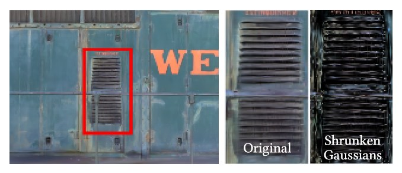
図3：最適化後の 3D ガウシアンを 60% 縮小して可視化したもの（右端）。最適化後に複雑なジオメトリをコンパクトに表現する 3D ガウシアンの異方的な形状がはっきりと分かる。左は実際のレンダリング画像である。
図中ラベル：Original＝元のレンダリング、Shrunken Gaussians＝縮小したガウシアン
5.1 最適化
最適化は、レンダリングと、得られた画像と撮影データセット中の学習視点との比較を逐次繰り返すことに基づく。3D から 2D への投影の曖昧さにより、ジオメトリが誤って配置されることは避けられない。したがって最適化は、ジオメトリを生成できること、そして誤って配置された場合にはジオメトリを破棄または移動できることが必要である。3D ガウシアンの共分散パラメータの品質は表現のコンパクトさにとって極めて重要である。大きな均質領域は少数の大きな異方性ガウシアンで捉えることができるからである。
最適化には確率的勾配降下法を用い、標準的な GPU 高速化フレームワークと、近年のベストプラクティス［Fridovich-Keil and Yu et al. 2022; Sun et al. 2022］に倣って一部の演算にカスタム CUDA カーネルを追加できることを最大限に活用する。特に、高速なラスタライゼーション（6 節参照）は最適化の主要な計算ボトルネックであるため、最適化の効率にとって決定的に重要である。
\(\alpha\) を \([0-1)\) の範囲に制約して滑らかな勾配を得るためにシグモイド活性化関数を用い、同様の理由から共分散のスケールには指数活性化関数を用いる。
初期の共分散行列は、最も近い 3 点までの距離の平均に等しい軸をもつ等方性ガウシアンとして推定する。Plenoxels［Fridovich-Keil and Yu et al. 2022］と同様の標準的な指数減衰スケジューリング手法を用いるが、これは位置に対してのみ適用する。損失関数は \(\mathcal{L}_1\) と D-SSIM 項を組み合わせたものである。
\[ \mathcal{L}=(1-\lambda)\mathcal{L}_1+\lambda\mathcal{L}_{\text{D-SSIM}} \tag{7} \]
すべての実験で \(\lambda=0.2\) を用いる。学習スケジュールとその他の要素の詳細は 7.1 節で述べる。
5.2 ガウシアンの適応的制御
SfM から得られる疎な点の初期集合から出発し、本手法を適用してガウシアンの数と単位体積あたりの密度1を適応的に制御することで、疎なガウシアンの初期集合から、シーンをより良く表現し正しいパラメータをもつより密な集合へと移行できる。最適化のウォームアップ（7.1 節参照）の後、100 イテレーションごとに高密度化を行い、本質的に透明なガウシアン、すなわち \(\alpha\) が閾値 \(\epsilon_\alpha\) 未満のものを除去する。
脚注1：ガウシアンの密度は、もちろん NeRF の文献における密度 \(\sigma\) と混同してはならない。
ガウシアンの適応的制御は、空の領域を埋める必要がある。これは幾何的特徴が欠けている領域（「過少再構成」）に焦点を当てるが、ガウシアンがシーン中の広い領域を覆っている領域（しばしば「過剰再構成」に対応する）も対象とする。いずれの場合もビュー空間での位置勾配が大きいことが観察される。直感的には、これらはまだうまく再構成されていない領域に対応しており、最適化がそれを修正するためにガウシアンを動かそうとするためであると考えられる。
どちらのケースも高密度化の良い候補であるため、ビュー空間の位置勾配の大きさの平均が閾値 \(\tau_{\text{pos}}\) を超えるガウシアンを高密度化する。実験ではこの閾値を 0.0002 に設定した。次に、図4に示すこの処理の詳細を述べる。
過少再構成された領域にある小さなガウシアンについては、生成すべき新しいジオメトリを覆う必要がある。そのためには、ガウシアンをクローンする、すなわち同じサイズのコピーを単に作成し、それを位置勾配の方向に移動させるのが望ましい。
一方、分散の大きい領域にある大きなガウシアンは、より小さなガウシアンに分割する必要がある。そのようなガウシアンを 2 つの新しいガウシアンで置き換え、そのスケールを実験的に決定した係数 \(\phi=1.6\) で割る。また、元の 3D ガウシアンをサンプリング用の確率密度関数（PDF）として用いて、新しいガウシアンの位置を初期化する。
前者の場合はシステムの総体積とガウシアンの数の両方を増やす必要性を検出して対処し、後者の場合は総体積を保ちつつガウシアンの数を増やす。他の体積表現と同様に、本手法の最適化は入力カメラの近くに浮遊物（floater）が生じた状態で行き詰まることがあり、本手法の場合、これはガウシアン密度の不当な増加につながりうる。ガウシアンの数の増加を抑える効果的な方法は、\(N=3000\) イテレーションごとに \(\alpha\) の値をゼロに近い値に設定することである。その後、最適化は必要なところでガウシアンの \(\alpha\) を増加させる一方、前述のように \(\alpha\) が \(\epsilon_\alpha\) 未満のガウシアンを除去するカリング手法によってガウシアンが除去される。ガウシアンは縮小・拡大したり他のガウシアンと大きく重なったりしうるが、ワールド空間で非常に大きいガウシアンと、ビュー空間で大きな投影面積をもつガウシアンを定期的に除去する。この戦略により、ガウシアンの総数を全体として良好に制御できる。本手法のモデル中のガウシアンは常にユークリッド空間のプリミティブのままであり、他の手法［Barron et al. 2022; Fridovich-Keil and Yu et al. 2022］とは異なり、遠方や大きなガウシアンのための空間圧縮、ワーピング、射影の戦略を必要としない。
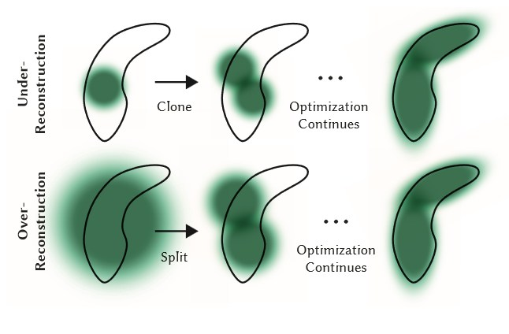
図4：本手法の適応的なガウシアン高密度化の方式。上段（過少再構成）：小規模なジオメトリ（黒い輪郭）が十分に覆われていない場合、該当するガウシアンをクローンする。下段（過剰再構成）：小規模なジオメトリが 1 つの大きなスプラットで表現されている場合、それを 2 つに分割する。
図中ラベル：Under-Reconstruction＝過少再構成、Over-Reconstruction＝過剰再構成、Clone＝クローン、Split＝分割、Optimization Continues＝最適化を継続
6 ガウシアンのための高速微分可能ラスタライザ
我々の目標は、高速な全体レンダリングと高速なソートを実現して（異方性スプラットも含めた）近似的な \(\alpha\) ブレンディングを可能にすること、そして従来研究［Lassner and Zollhofer 2021］に存在した、勾配を受け取ることのできるスプラット数に対する厳しい上限を回避することである。
これらの目標を達成するため、近年のソフトウェアラスタライゼーション手法［Lassner and Zollhofer 2021］に着想を得て、画像全体のプリミティブを一度に事前ソートするガウシアンスプラット用のタイルベースのラスタライザを設計した。これにより、従来の \(\alpha\) ブレンディングの解法［Kopanas et al. 2022, 2021］の妨げとなっていたピクセルごとのソートのコストを回避する。本手法の高速なラスタライザは、ピクセルあたり一定のオーバーヘッドしか必要とせず、追加メモリ消費の少ない形で、任意の数のブレンドされたガウシアンにわたる効率的な逆伝播を可能にする。本手法のラスタライゼーションパイプラインは完全に微分可能であり、2D への投影（4 節）が与えられれば、従来の 2D スプラッティング手法［Kopanas et al. 2021］と同様に異方性スプラットをラスタライズできる。
本手法では、まず画面を 16×16 のタイルに分割し、次に 3D ガウシアンをビュー錐台および各タイルに対してカリングする。具体的には、99% 信頼区間がビュー錐台と交差するガウシアンのみを保持する。さらに、極端な位置にあるガウシアン（すなわち、平均がニアプレーンに近いものや、ビュー錐台から大きく外れたもの）は射影された 2D 共分散の計算が不安定になるため、ガードバンドを用いてこれらを単純に棄却する。次に、各ガウシアンを重なるタイルの数に応じてインスタンス化し、各インスタンスにビュー空間の深度とタイル ID を組み合わせたキーを割り当てる。そして、単一の高速な GPU 基数ソート（Radix sort）［Merrill and Grimshaw 2010］を用いて、これらのキーに基づいてガウシアンをソートする。ピクセルごとに点を追加で順序付けすることはなく、ブレンディングはこの初期ソートに基づいて行われる点に注意されたい。その結果、構成によっては \(\alpha\) ブレンディングが近似的になりうる。しかし、スプラットが個々のピクセル程度の大きさに近づくにつれて、これらの近似は無視できるものとなる。この選択は、収束したシーンにおいて目に見えるアーティファクトを生じることなく、学習とレンダリングの性能を大きく向上させることが分かった。
ガウシアンをソートした後、各タイルについて、そのタイルにスプラットされる深度ソート済みの最初と最後のエントリを特定することで、タイルごとのリストを作成する。ラスタライゼーションでは、各タイルに対して 1 つのスレッドブロックを起動する。各ブロックはまずガウシアンのパケットを共有メモリに協調してロードし、次に、あるピクセルについてリストを前から後ろへ走査して色と \(\alpha\) の値を累積することで、データのロード／共有と処理の両方で並列性の利得を最大化する。ピクセルにおいて \(\alpha\) が目標の飽和値に達すると、対応するスレッドは停止する。一定間隔でタイル内のスレッドが問い合わせを受け、すべてのピクセルが飽和した（すなわち \(\alpha\) が 1 になった）時点でタイル全体の処理が終了する。ソートの詳細とラスタライゼーション手法全体の高レベルな概要は付録 C に示す。
ラスタライゼーションの間、\(\alpha\) の飽和が唯一の停止条件である。従来研究とは対照的に、勾配の更新を受け取るブレンドされたプリミティブの数を制限しない。この性質を強制するのは、本手法がシーン固有のハイパーパラメータ調整に頼ることなく、任意かつ変動する深度複雑度のシーンを扱い、正確に学習できるようにするためである。したがって逆伝播の際には、順伝播でピクセルごとにブレンドされた点の完全な列を復元しなければならない。一つの解決策は、ピクセルごとにブレンドされた点の任意長のリストをグローバルメモリに格納することであろう［Kopanas et al. 2021］。それに伴う動的メモリ管理のオーバーヘッドを避けるため、代わりにタイルごとのリストを再度走査することを選んだ。順伝播で得たガウシアンのソート済み配列とタイルの範囲を再利用できる。勾配計算を容易にするため、今度はそれらを後ろから前へ走査する。
走査は、タイル内のいずれかのピクセルに影響を与えた最後の点から始まり、点の共有メモリへのロードも再び協調して行われる。さらに、各ピクセルは、点の深度が順伝播の間にそのピクセルの色に寄与した最後の点の深度以下である場合にのみ、（コストの高い）重なり判定と点の処理を開始する。4 節で述べた勾配の計算には、元のブレンディング処理の各ステップにおける累積不透明度の値が必要である。逆伝播で段階的に縮小していく不透明度の明示的なリストを走査する代わりに、順伝播の終わりにおける累積不透明度の合計のみを格納することで、これらの中間的な不透明度を復元できる。具体的には、各点は順伝播処理における最終的な累積不透明度 \(\alpha\) を格納し、後ろから前への走査においてこれを各点の \(\alpha\) で割ることで、勾配計算に必要な係数を得る。
7 実装、結果、評価
次に、実装の詳細について述べ、結果と、従来研究との比較およびアブレーション研究による本アルゴリズムの評価を示す。
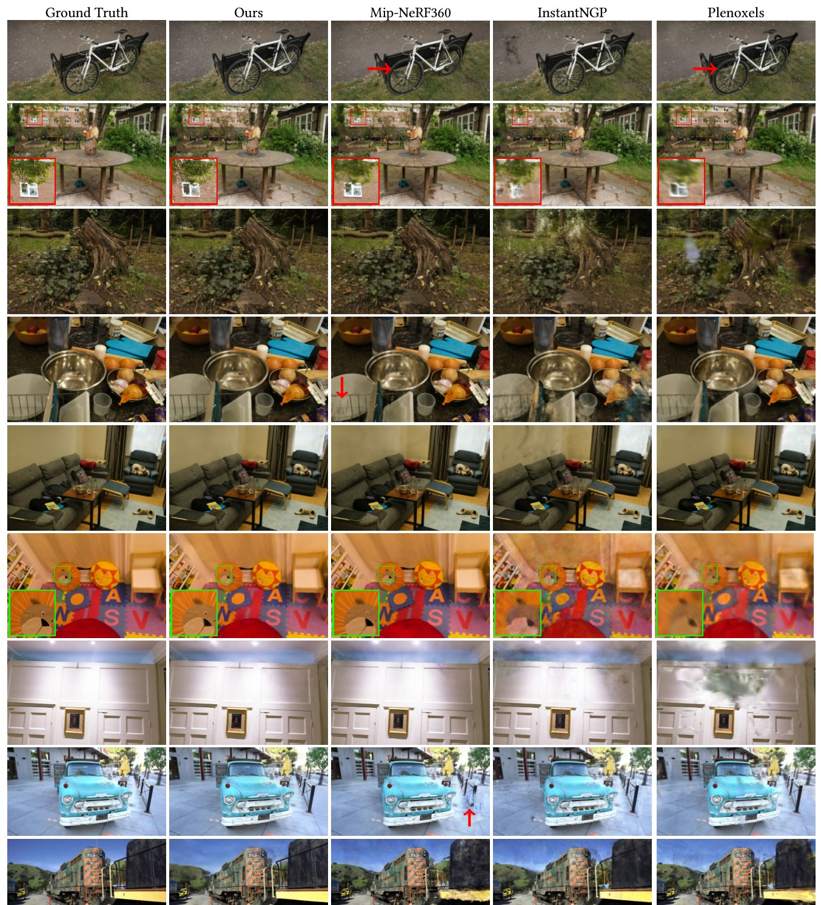
図5：評価用に除外したテスト視点において、本手法と従来手法との比較および対応する正解画像を示す。シーンは上から順に、Mip-NeRF360 データセットの Bicycle、Garden、Stump、Counter、Room、Deep Blending データセット［Hedman et al. 2018］の Playroom、DrJohnson、Tanks&Temples の Truck、Train である。分かりにくい品質の差異は矢印／拡大挿入図で強調している。
図中ラベル：Ground Truth＝正解画像、Ours＝本手法
| データセット | Mip-NeRF360 | Tanks&Temples | Deep Blending | |||||||||||||||
|---|---|---|---|---|---|---|---|---|---|---|---|---|---|---|---|---|---|---|
| 手法｜指標 | SSIM↑ | PSNR↑ | LPIPS↓ | 学習時間 | FPS | メモリ | SSIM↑ | PSNR↑ | LPIPS↓ | 学習時間 | FPS | メモリ | SSIM↑ | PSNR↑ | LPIPS↓ | 学習時間 | FPS | メモリ |
| Plenoxels | 0.626 | 23.08 | 0.463 | 25m49s | 6.79 | 2.1GB | 0.719 | 21.08 | 0.379 | 25m5s | 13.0 | 2.3GB | 0.795 | 23.06 | 0.510 | 27m49s | 11.2 | 2.7GB |
| INGP-Base | 0.671 | 25.30 | 0.371 | 5m37s | 11.7 | 13MB | 0.723 | 21.72 | 0.330 | 5m26s | 17.1 | 13MB | 0.797 | 23.62 | 0.423 | 6m31s | 3.26 | 13MB |
| INGP-Big | 0.699 | 25.59 | 0.331 | 7m30s | 9.43 | 48MB | 0.745 | 21.92 | 0.305 | 6m59s | 14.4 | 48MB | 0.817 | 24.96 | 0.390 | 8m | 2.79 | 48MB |
| M-NeRF360 | 0.792† | 27.69† | 0.237† | 48h | 0.06 | 8.6MB | 0.759 | 22.22 | 0.257 | 48h | 0.14 | 8.6MB | 0.901 | 29.40 | 0.245 | 48h | 0.09 | 8.6MB |
| Ours-7K | 0.770 | 25.60 | 0.279 | 6m25s | 160 | 523MB | 0.767 | 21.20 | 0.280 | 6m55s | 197 | 270MB | 0.875 | 27.78 | 0.317 | 4m35s | 172 | 386MB |
| Ours-30K | 0.815 | 27.21 | 0.214 | 41m33s | 134 | 734MB | 0.841 | 23.14 | 0.183 | 26m54s | 154 | 411MB | 0.903 | 29.41 | 0.243 | 36m2s | 137 | 676MB |
表1：3 つのデータセットで算出した、本手法と従来研究との定量評価。ダガー † を付けた結果は元論文からそのまま採用したものであり、それ以外はすべて我々自身の実験で得たものである。
（訳注：原表では各指標の 1 位・2 位・3 位がセルの色（赤・橙・黄）で示されている。本訳では 1 位のみを太字で示した。）
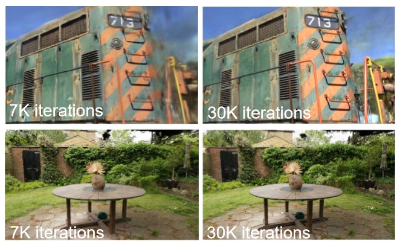
図6：一部のシーン（上）では、7K イテレーション（このシーンでは約 5 分）の時点でも本手法が列車をかなりよく捉えていることが分かる。30K イテレーション（約 35 分）では背景のアーティファクトが大幅に減少している。他のシーン（下）では差はほとんど見えず、7K イテレーション（約 8 分）の時点ですでに非常に高品質である。
図中ラベル：7K iterations＝7K イテレーション、30K iterations＝30K イテレーション
| Mic | Chair | Ship | Materials | Lego | Drums | Ficus | Hotdog | 平均 | |
|---|---|---|---|---|---|---|---|---|---|
| Plenoxels | 33.26 | 33.98 | 29.62 | 29.14 | 34.10 | 25.35 | 31.83 | 36.81 | 31.76 |
| INGP-Base | 36.22 | 35.00 | 31.10 | 29.78 | 36.39 | 26.02 | 33.51 | 37.40 | 33.18 |
| Mip-NeRF | 36.51 | 35.14 | 30.41 | 30.71 | 35.70 | 25.48 | 33.29 | 37.48 | 33.09 |
| Point-NeRF | 35.95 | 35.40 | 30.97 | 29.61 | 35.04 | 26.06 | 36.13 | 37.30 | 33.30 |
| Ours-30K | 35.36 | 35.83 | 30.80 | 30.00 | 35.78 | 26.15 | 34.87 | 37.72 | 33.32 |
表2：Synthetic NeRF における PSNR スコア。本手法はランダムに初期化した 100K 個の点から開始する。比較手法の指標はそれぞれの論文から引用した。
（訳注：原表では 1 位・2 位・3 位がセルの色で示されている。本訳では 1 位のみを太字で示した。）
7.1 実装
本手法を PyTorch フレームワークを用いて Python で実装し、ラスタライゼーション用のカスタム CUDA カーネルを作成した。これらは従来手法［Kopanas et al. 2021］を拡張したものであり、高速な基数ソートには NVIDIA CUB のソートルーチン［Merrill and Grimshaw 2010］を用いた。また、インタラクティブな閲覧のために、オープンソースの SIBR［Bonopera et al. 2020］を用いたインタラクティブビューアも構築した。この実装を用いて、達成したフレームレートを計測した。ソースコードとすべてのデータは次の URL で入手できる：https://repo-sam.inria.fr/fungraph/3d-gaussian-splatting/
最適化の詳細。安定性のため、計算を低解像度で「ウォームアップ」する。具体的には、4 倍小さい画像解像度で最適化を開始し、250 イテレーション後と 500 イテレーション後に 2 回アップサンプリングする。
SH 係数の最適化は角度情報の不足に敏感である。中心の物体がその周囲の半球全体から撮影された写真によって観測される典型的な「NeRF 型」の撮影では、最適化はうまく機能する。しかし、撮影において角度領域が欠けている場合（たとえば、シーンの隅を撮影する場合や、「インサイドアウト」［Hedman et al. 2016］の撮影を行う場合）、最適化によって SH の 0 次成分（すなわち基本色または拡散色）に完全に誤った値が生じうる。この問題を克服するため、まず 0 次成分のみを最適化し、その後 1000 イテレーションごとに SH のバンドを 1 つずつ導入して、SH の 4 つのバンドすべてが表現されるまで続ける。
7.2 結果と評価
結果。既存の公開データセットから得た合計 13 の実シーンと、合成 Blender データセット［Mildenhall et al. 2020］で本アルゴリズムをテストした。特に、NeRF のレンダリング品質における現在の最先端である Mip-Nerf360［Barron et al. 2022］で提示されたシーンの全セット、Tanks&Temples データセット［2017］の 2 シーン、および Hedman ら［Hedman et al. 2018］が提供する 2 シーンで本手法をテストした。選んだシーンは撮影スタイルが大きく異なり、境界のある屋内シーンと大規模で境界のない屋外環境の両方を含む。評価のすべての実験で同じハイパーパラメータ設定を用いる。Mip-NeRF360 手法（下記参照）を除き、すべての結果は A6000 GPU 上で実行して報告している。
補足資料では、入力写真から離れた視点を含むいくつかのシーンについて、レンダリングした動画のパスを示す。
実シーン。品質の点では、現在の最先端は Mip-Nerf360［Barron et al. 2021］である。品質のベンチマークとしてこの手法と比較する。また、最も新しい高速な NeRF 手法のうち 2 つ、InstantNGP［Müller et al. 2022］と Plenoxels［Fridovich-Keil and Yu et al. 2022］とも比較する。（訳注：ここでの Mip-Nerf360 の引用年は「2021」となっているが、他の箇所では［Barron et al. 2022］として引用されている。）
データセットについては、一貫性があり意味のある比較のために Mip-NeRF360 が提案した方法論に従って学習／テストの分割を用い、8 枚ごとに 1 枚の写真をテスト用とし、文献で最も頻繁に用いられる標準的な PSNR、L-PIPS、SSIM の指標で誤差を算出する。表1を参照されたい。表中の数値はすべて、従来手法については著者のコードを我々自身が実行して得たものである。ただし Mip-NeRF360 の同データセットにおける数値は例外で、現在の SOTA について混乱を避けるため元の論文の数値をそのまま転記した。図中の画像については、Mip-NeRF360 を我々自身で実行したものを用いた。これらの実行の数値は付録 D にある。また、平均の学習時間、レンダリング速度、最適化されたパラメータの格納に用いるメモリも示す。InstantNGP については、35K イテレーション実行した基本設定（Base）と、著者らが推奨するやや大きいネットワーク（Big）の結果を、本手法については 7K と 30K イテレーションの 2 つの設定の結果を報告する。2 つの設定の視覚品質の違いを図6に示す。多くの場合、7K イテレーションの時点で品質はすでにかなり良好である。
| Truck-5K | Garden-5K | Bicycle-5K | Truck-30K | Garden-30K | Bicycle-30K | Average-5K | Average-30K | |
|---|---|---|---|---|---|---|---|---|
| Limited-BW | 14.66 | 22.07 | 20.77 | 13.84 | 22.88 | 20.87 | 19.16 | 19.19 |
| Random Init | 16.75 | 20.90 | 19.86 | 18.02 | 22.19 | 21.05 | 19.17 | 20.42 |
| No-Split | 18.31 | 23.98 | 22.21 | 20.59 | 26.11 | 25.02 | 21.50 | 23.90 |
| No-SH | 22.36 | 25.22 | 22.88 | 24.39 | 26.59 | 25.08 | 23.48 | 25.35 |
| No-Clone | 22.29 | 25.61 | 22.15 | 24.82 | 27.47 | 25.46 | 23.35 | 25.91 |
| Isotropic | 22.40 | 25.49 | 22.81 | 23.89 | 27.00 | 24.81 | 23.56 | 25.23 |
| Full | 22.71 | 25.82 | 23.18 | 24.81 | 27.70 | 25.65 | 23.90 | 26.05 |
表3：アブレーション実験の PSNR スコア。この実験では、各シーンの入力画像の高解像度版を、他の実験で定めたレンダリング解像度へ手動でダウンサンプリングした。これにより、ランダムなアーティファクト（たとえば、事前に縮小された Mip-NeRF360 の入力における JPEG 圧縮によるもの）が減少する。
（訳注：行名 Limited-BW＝勾配を受け取るスプラット数の制限、Random Init＝ランダム初期化、No-Split＝分割なし、No-SH＝SH なし、No-Clone＝クローンなし、Isotropic＝等方性、Full＝完全な手法。原表では 1 位・2 位・3 位がセルの色で示されており、本訳では 1 位のみを太字で示した。）
学習時間はデータセットごとに異なるため、個別に報告する。画像解像度もデータセットごとに異なる点に注意されたい。プロジェクトのウェブサイトでは、すべてのシーンにおけるすべての手法（本手法および従来研究）の統計量の算出に用いたテスト視点のレンダリング結果をすべて提供している。なお、すべてのレンダリングで元の入力解像度を維持した。
表から、完全に収束した本手法のモデルは SOTA の Mip-NeRF360 手法と同等、時にはわずかに上回る品質を達成していることが分かる。同じハードウェア上で、Mip-NeRF360 の平均学習時間は 48 時間2であり、本手法の 35〜45 分と比較される。またそのレンダリング時間は 1 フレームあたり 10 秒である。本手法は 5〜10 分の学習で InstantNGP や Plenoxels と同等の品質を達成するが、追加の学習時間により SOTA の品質を達成でき、これは他の高速な手法には当てはまらない。Tanks & Temples については、同程度の学習時間（本手法の場合は約 7 分）で基本設定の InstantNGP と同程度の品質を達成する。
脚注2：Mip-NeRF360 は 4 GPU の A100 ノード上で 12 時間学習した。これは単一 GPU で 48 時間に相当する。A100 は A6000 GPU より高速であることに注意されたい。
また、図5では、評価用に除外したテスト視点について、本手法と比較対象として選んだ従来のレンダリング手法とのこの比較の視覚的な結果も示している。本手法の結果は 30K イテレーション学習したものである。場合によっては Mip-NeRF360 にさえ本手法が回避しているアーティファクトが残っていることが分かる（たとえば、Bicycle、Stump における植生のぼやけや、Room の壁）。補足動画とウェブページでは、離れた位置からのパスの比較を提供している。本手法は、十分にカバーされた領域の視覚的な詳細を遠くからでも保つ傾向があり、これは従来手法では必ずしもそうではない。
合成の有界シーン。現実的なシーンに加えて、合成の Blender データセット［Mildenhall et al. 2020］でも本手法を評価する。対象となるシーンは網羅的な視点の集合を提供し、サイズが限られており、正確なカメラパラメータが与えられている。このような状況では、ランダムな初期化でも最先端の結果を達成できる。すなわち、シーンの境界を囲む体積内に一様ランダムに配置した 100K 個のガウシアンから学習を開始する。本手法はそれらを素早く自動的に約 6〜10K 個の意味のあるガウシアンへと枝刈りする。30K イテレーション後の学習済みモデルの最終的なサイズは、シーンあたり約 200〜500K 個のガウシアンに達する。互換性のために白背景を用いて、達成した PSNR スコアを表2で従来手法と比較して報告する。例は図10（左から 2 番目の画像）と補足資料で見ることができる。学習済みの合成シーンは 180〜300 FPS でレンダリングされた。
コンパクトさ。従来の明示的なシーン表現と比較して、本手法の最適化で用いる異方性ガウシアンは、より少ないパラメータ数で複雑な形状をモデル化することができる。これを示すため、［Zhang et al. 2022］で得られる非常にコンパクトな点ベースのモデルに対して本手法を評価する。彼らの初期点群（前景マスクを用いたスペースカービングによって得られる）から出発し、彼らが報告した PSNR スコアに並ぶまで最適化する。これは通常 2〜4 分以内に起こる。本手法は彼らの点数の約 4 分の 1 で彼らの報告した指標を上回り、平均モデルサイズは彼らの 9 MB に対して 3.8 MB となった。なお、この実験では、彼らと同様に球面調和関数を 2 次までしか用いていない。
7.3 アブレーション
本手法の各貢献とアルゴリズム上の選択を切り分け、その効果を測定するための一連の実験を構成した。具体的には、本アルゴリズムの次の側面をテストする：SfM からの初期化、高密度化の戦略、異方性共分散、勾配をもつスプラットの数を無制限にしていること、および球面調和関数の使用。各選択の定量的な効果を表3にまとめる。
SfM からの初期化。SfM 点群から 3D ガウシアンを初期化することの重要性も評価する。このアブレーションでは、入力カメラのバウンディングボックスの範囲の 3 倍のサイズの立方体から一様にサンプリングする。本手法は比較的うまく機能し、SfM 点がなくても完全な失敗は避けられることが観察される。その代わり、主に背景で劣化する（図7参照）。また、学習視点で十分にカバーされていない領域では、ランダム初期化の手法は最適化で除去できない浮遊物がより多く生じるようである。一方、合成 NeRF データセットは背景がなく、入力カメラによって十分に制約されているため、このような挙動を示さない（上記の議論を参照）。
高密度化。次に、2 つの高密度化手法、より具体的には 5 節で述べたクローンと分割の戦略を評価する。各手法を個別に無効化し、手法の残りの部分は変えずに最適化する。結果は、図8に見られるように大きなガウシアンを分割することが背景の良好な再構成を可能にするために重要であり、一方で小さなガウシアンを分割する代わりにクローンすることで、特にシーンに細い構造が現れる場合に、より良く速い収束が可能になることを示している。
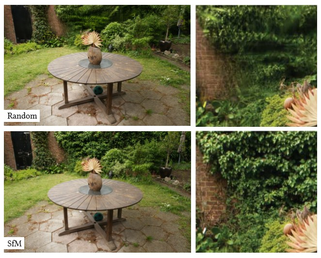
図7：SfM 点による初期化は有効である。上：ランダムな点群による初期化。下：SfM 点を用いた初期化。
図中ラベル：Random＝ランダム初期化、SfM＝SfM 点による初期化
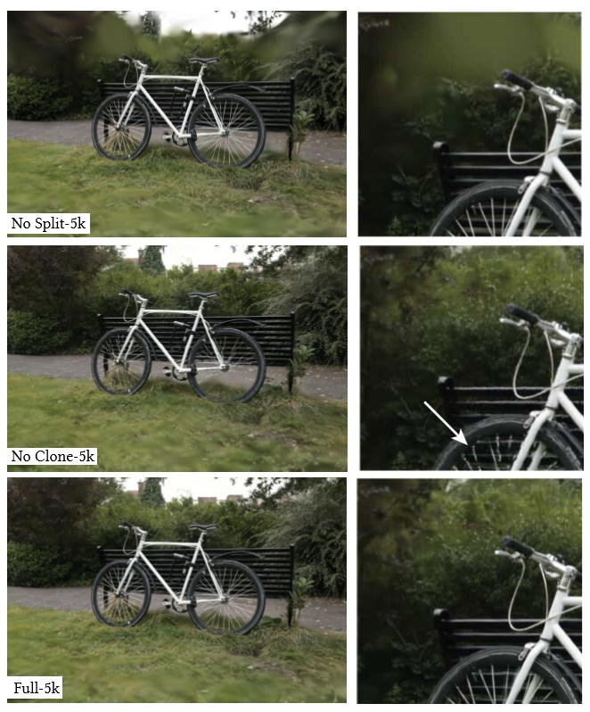
図8：「クローン」と「分割」の 2 つのケースに対する高密度化戦略のアブレーション（5 節）。
図中ラベル：No Split-5k＝分割なし（5k イテレーション）、No Clone-5k＝クローンなし（5k イテレーション）、Full-5k＝完全な手法（5k イテレーション）
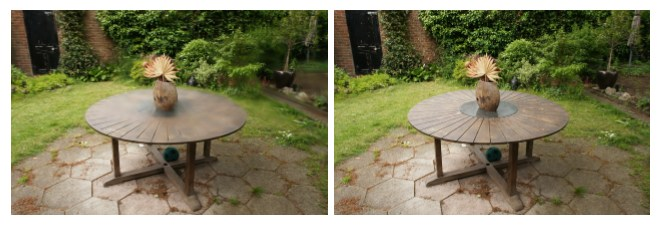
図9：勾配を受け取る点の数を制限すると、視覚品質への影響は大きい。左：勾配を受け取るガウシアンを 10 個に制限した場合。右：本手法の完全版。
勾配をもつスプラットの深度複雑度の無制限化。Pulsar［Lassner and Zollhofer 2021］で示唆されているように、最前面の \(N\) 個の点以降の勾配計算を省略することで品質を犠牲にせずに速度が得られるかを評価する。このテストでは N=10 を選んだ。これは Pulsar のデフォルト値の 2 倍であるが、勾配計算における深刻な近似のために最適化が不安定になった。Truck シーンでは PSNR で 11dB 品質が劣化し（表3の Limited-BW 参照）、Garden についての視覚的な結果を図9に示す。
異方性共分散。本手法における重要なアルゴリズム上の選択は、3D ガウシアンの完全な共分散行列の最適化である。この選択の効果を示すため、3 軸すべてについて 3D ガウシアンの半径を制御する単一のスカラー値を最適化することで異方性を取り除くアブレーションを行う。この最適化の結果を図10に視覚的に示す。異方性は 3D ガウシアンが表面に沿って配置される能力の質を大きく向上させ、それにより同じ点数を保ちながらはるかに高いレンダリング品質が可能になることが観察される。
球面調和関数。最後に、球面調和関数の使用は視点依存の効果を補償するため、全体的な PSNR スコアを改善する（表3）。
7.4 限界
本手法には限界がないわけではない。シーンが十分に観測されていない領域ではアーティファクトが生じる。そのような領域では他の手法も苦労する（たとえば図11の Mip-NeRF360）。上述のとおり異方性ガウシアンには多くの利点があるものの、本手法は細長いアーティファクトや「まだら状の」ガウシアンを生じることがある（図12参照）。これらの場合も、従来手法もやはり苦労する。
また、最適化によって大きなガウシアンが生成されると、ポッピング（popping）アーティファクトが時折生じる。これは視点依存の見えをもつ領域で起こりやすい。これらのポッピングアーティファクトの原因の一つは、ラスタライザにおけるガードバンドによるガウシアンの単純な棄却である。より原理に基づいたカリング手法を用いればこれらのアーティファクトは軽減されるであろう。もう一つの要因は単純な可視性アルゴリズムであり、これによりガウシアンの深度／ブレンディングの順序が突然入れ替わることがある。これはアンチエイリアシングによって対処できる可能性があり、今後の課題とする。また、現在は最適化にいかなる正則化も適用していない。正則化を適用すれば、観測されていない領域とポッピングアーティファクトの両方に役立つであろう。
完全な評価では同じハイパーパラメータを用いたが、初期の実験では、非常に大規模なシーン（たとえば都市のデータセット）で収束させるには位置の学習率を下げる必要がありうることが示されている。
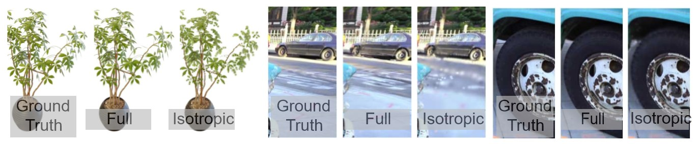
図10：ガウシアンの異方性を無効にした場合と有効にした場合でシーンを学習した結果。異方性の体積スプラットを用いることで細かい構造をモデル化でき、視覚品質に大きな影響を与える。説明のため、Ficus ではどちらの設定でもガウシアンを 5k 個以下に制限した点に注意されたい。
図中ラベル：Ground Truth＝正解画像、Full＝完全な手法（異方性あり）、Isotropic＝等方性
従来の点ベースの手法と比べて非常にコンパクトであるにもかかわらず、本手法のメモリ消費量は NeRF ベースの解法よりも大幅に多い。大規模なシーンの学習中、最適化されていない本プロトタイプではピーク時の GPU メモリ消費量が 20 GB を超えることがある。しかし、この数値は（InstantNGP と同様に）最適化ロジックを注意深く低水準で実装することで大幅に削減できるであろう。学習済みシーンのレンダリングには、完全なモデルを格納するための十分な GPU メモリ（大規模シーンでは数百メガバイト）と、シーンのサイズと画像解像度に応じてラスタライザ用に追加の 30〜500 MB が必要である。本手法のメモリ消費量をさらに削減する機会は多いことを付記しておく。点群の圧縮技術はよく研究された分野であり［De Queiroz and Chou 2016］、そのような手法を本手法の表現にどのように適用できるかを調べることは興味深いであろう。
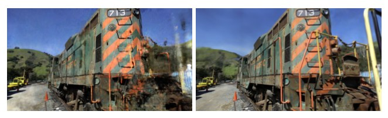
図11：失敗時のアーティファクトの比較。Mip-NeRF360 には「浮遊物」と粒状の見た目が生じる（左、前景）一方、本手法は粗い異方性ガウシアンを生成し、詳細の乏しい見た目となる（右、背景）。Train シーン。（訳注：原文は「ansoptropic」で、「anisotropic」の誤植。）
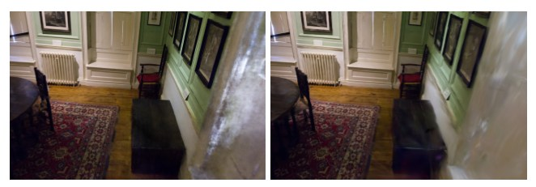
図12：学習中に見た視点との重なりが少ない視点では、本手法はアーティファクトを生じることがある（右）。この場合も Mip-NeRF360 にもアーティファクトが生じる（左）。DrJohnson シーン。
8 考察と結論
本論文では、多種多様なシーンと撮影スタイルにおいて、従来の最速手法と遜色ない学習時間で、真に実時間かつ高品質な放射輝度場レンダリングを可能にする初めての手法を提示した。
3D ガウシアンプリミティブという選択は、最適化のための体積レンダリングの性質を保ちつつ、高速なスプラットベースのラスタライゼーションを直接可能にする。本研究は、広く受け入れられている見解に反して、高速かつ高品質な放射輝度場の学習に連続的な表現が厳密には必要ないことを示している。
学習時間の大部分（約 80%）は Python コードで費やされている。これは、他者が本手法を容易に利用できるように PyTorch で解法を構築したためである。最適化された CUDA カーネルとして実装されているのはラスタライゼーションのルーチンのみである。残りの最適化を、たとえば InstantNGP［Müller et al. 2022］で行われているように完全に CUDA へ移植すれば、性能が不可欠なアプリケーションにおいてさらに大幅な高速化が可能になると期待される。
また、GPU の能力とソフトウェアラスタライゼーションパイプラインのアーキテクチャの速度を活用し、実時間レンダリングの原理に基づいて構築することの重要性も示した。これらの設計上の選択は学習と実時間レンダリングの両方の性能の鍵であり、従来の体積レイマーチングに対して性能面での競争上の優位性をもたらす。
本手法のガウシアンを、撮影シーンのメッシュ再構成に利用できるかを調べることは興味深いであろう。メッシュが広く用いられていることを踏まえた実用上の意義に加えて、これにより、体積表現と表面表現の連続体において本手法が正確にどこに位置するかをより良く理解できるようになるであろう。
結論として、我々は放射輝度場に対する初の実時間レンダリング解法を提示した。そのレンダリング品質は従来の最良かつ高コストな手法に匹敵し、学習時間は既存の最速の解法と遜色ない。
謝辞
本研究は ERC Advanced grant FUNGRAPH No 788065 http://fungraph.inria.fr の助成を受けた。著者らは、寛大な寄付をいただいた Adobe、Université Côte d'Azur の OPAL インフラストラクチャ、および GENCI–IDRIS の HPC 資源（Grant 2022-AD011013409）に感謝する。著者らは、貴重なフィードバックをいただいた匿名の査読者、初期の草稿を校正していただいた P. Hedman と A. Tewari、そして比較に協力していただいた T. Müller、A. Yu、S. Fridovich-Keil に感謝する。
参考文献
参考文献は原文のまま掲載した。
- Kara-Ali Aliev, Artem Sevastopolsky, Maria Kolos, Dmitry Ulyanov, and Victor Lempitsky. 2020. Neural Point-Based Graphics. In Computer Vision – ECCV 2020: 16th European Conference, Glasgow, UK, August 23–28, 2020, Proceedings, Part XXII. 696–712.
- Jonathan T Barron, Ben Mildenhall, Matthew Tancik, Peter Hedman, Ricardo Martin-Brualla, and Pratul P Srinivasan. 2021. Mip-nerf: A multiscale representation for anti-aliasing neural radiance fields. In Proceedings of the IEEE/CVF International Conference on Computer Vision. 5855–5864.
- Jonathan T. Barron, Ben Mildenhall, Dor Verbin, Pratul P. Srinivasan, and Peter Hedman. 2022. Mip-NeRF 360: Unbounded Anti-Aliased Neural Radiance Fields. CVPR (2022).
- Sebastien Bonopera, Jerome Esnault, Siddhant Prakash, Simon Rodriguez, Theo Thonat, Mehdi Benadel, Gaurav Chaurasia, Julien Philip, and George Drettakis. 2020. sibr: A System for Image Based Rendering. https://gitlab.inria.fr/sibr/sibr_core
- Mario Botsch, Alexander Hornung, Matthias Zwicker, and Leif Kobbelt. 2005. High-Quality Surface Splatting on Today's GPUs. In Proceedings of the Second Eurographics / IEEE VGTC Conference on Point-Based Graphics (New York, USA) (SPBG'05). Eurographics Association, Goslar, DEU, 17–24.
- Chris Buehler, Michael Bosse, Leonard McMillan, Steven Gortler, and Michael Cohen. 2001. Unstructured lumigraph rendering. In Proc. SIGGRAPH.
- Gaurav Chaurasia, Sylvain Duchene, Olga Sorkine-Hornung, and George Drettakis. 2013. Depth synthesis and local warps for plausible image-based navigation. ACM Transactions on Graphics (TOG) 32, 3 (2013), 1–12.
- Anpei Chen, Zexiang Xu, Andreas Geiger, Jingyi Yu, and Hao Su. 2022b. TensoRF: Tensorial Radiance Fields. In European Conference on Computer Vision (ECCV).
- Zhiqin Chen, Thomas Funkhouser, Peter Hedman, and Andrea Tagliasacchi. 2022a. MobileNeRF: Exploiting the Polygon Rasterization Pipeline for Efficient Neural Field Rendering on Mobile Architectures. arXiv preprint arXiv:2208.00277 (2022).
- Ricardo L De Queiroz and Philip A Chou. 2016. Compression of 3D point clouds using a region-adaptive hierarchical transform. IEEE Transactions on Image Processing 25, 8 (2016), 3947–3956.
- Martin Eisemann, Bert De Decker, Marcus Magnor, Philippe Bekaert, Edilson De Aguiar, Naveed Ahmed, Christian Theobalt, and Anita Sellent. 2008. Floating textures. In Computer graphics forum, Vol. 27. Wiley Online Library, 409–418.
- John Flynn, Ivan Neulander, James Philbin, and Noah Snavely. 2016. Deepstereo: Learning to predict new views from the world's imagery. In CVPR.
- Fridovich-Keil and Yu, Matthew Tancik, Qinhong Chen, Benjamin Recht, and Angjoo Kanazawa. 2022. Plenoxels: Radiance Fields without Neural Networks. In CVPR.
- Stephan J. Garbin, Marek Kowalski, Matthew Johnson, Jamie Shotton, and Julien Valentin. 2021. FastNeRF: High-Fidelity Neural Rendering at 200FPS. In Proceedings of the IEEE/CVF International Conference on Computer Vision (ICCV). 14346–14355.
- Michael Goesele, Noah Snavely, Brian Curless, Hugues Hoppe, and Steven M Seitz. 2007. Multi-view stereo for community photo collections. In ICCV.
- Steven J Gortler, Radek Grzeszczuk, Richard Szeliski, and Michael F Cohen. 1996. The lumigraph. In Proceedings of the 23rd annual conference on Computer graphics and interactive techniques. 43–54.
- Markus Gross and Hanspeter (Eds) Pfister. 2011. Point-based graphics. Elsevier.
- Jeff P. Grossman and William J. Dally. 1998. Point Sample Rendering. In Rendering Techniques.
- Peter Hedman, Julien Philip, True Price, Jan-Michael Frahm, George Drettakis, and Gabriel Brostow. 2018. Deep blending for free-viewpoint image-based rendering. ACM Trans. on Graphics (TOG) 37, 6 (2018).
- Peter Hedman, Tobias Ritschel, George Drettakis, and Gabriel Brostow. 2016. Scalable Inside-Out Image-Based Rendering. ACM Transactions on Graphics (SIGGRAPH Asia Conference Proceedings) 35, 6 (December 2016). http://www-sop.inria.fr/reves/Basilic/2016/HRDB16
- Peter Hedman, Pratul P. Srinivasan, Ben Mildenhall, Jonathan T. Barron, and Paul Debevec. 2021. Baking Neural Radiance Fields for Real-Time View Synthesis. ICCV (2021).
- Philipp Henzler, Niloy J Mitra, and Tobias Ritschel. 2019. Escaping plato's cave: 3d shape from adversarial rendering. In Proceedings of the IEEE/CVF International Conference on Computer Vision. 9984–9993.
- Arno Knapitsch, Jaesik Park, Qian-Yi Zhou, and Vladlen Koltun. 2017. Tanks and temples: Benchmarking large-scale scene reconstruction. ACM Transactions on Graphics (ToG) 36, 4 (2017), 1–13.
- Georgios Kopanas, Thomas Leimkühler, Gilles Rainer, Clément Jambon, and George Drettakis. 2022. Neural Point Catacaustics for Novel-View Synthesis of Reflections. ACM Transactions on Graphics (SIGGRAPH Asia Conference Proceedings) 41, 6 (2022), 201. http://www-sop.inria.fr/reves/Basilic/2022/KLRJD22
- Georgios Kopanas, Julien Philip, Thomas Leimkühler, and George Drettakis. 2021. Point-Based Neural Rendering with Per-View Optimization. Computer Graphics Forum 40, 4 (2021), 29–43. https://doi.org/10.1111/cgf.14339
- Samuli Laine and Tero Karras. 2011. High-performance software rasterization on GPUs. In Proceedings of the ACM SIGGRAPH Symposium on High Performance Graphics. 79–88.
- Christoph Lassner and Michael Zollhofer. 2021. Pulsar: Efficient Sphere-Based Neural Rendering. In Proceedings of the IEEE/CVF Conference on Computer Vision and Pattern Recognition (CVPR). 1440–1449.
- Marc Levoy and Pat Hanrahan. 1996. Light field rendering. In Proceedings of the 23rd annual conference on Computer graphics and interactive techniques. 31–42.
- Stephen Lombardi, Tomas Simon, Gabriel Schwartz, Michael Zollhoefer, Yaser Sheikh, and Jason Saragih. 2021. Mixture of volumetric primitives for efficient neural rendering. ACM Transactions on Graphics (TOG) 40, 4 (2021), 1–13.
- Duane G Merrill and Andrew S Grimshaw. 2010. Revisiting sorting for GPGPU stream architectures. In Proceedings of the 19th international conference on Parallel architectures and compilation techniques. 545–546.
- Ben Mildenhall, Pratul P. Srinivasan, Matthew Tancik, Jonathan T. Barron, Ravi Ramamoorthi, and Ren Ng. 2020. NeRF: Representing Scenes as Neural Radiance Fields for View Synthesis. In ECCV.
- Thomas Müller, Alex Evans, Christoph Schied, and Alexander Keller. 2022. Instant Neural Graphics Primitives with a Multiresolution Hash Encoding. ACM Trans. Graph. 41, 4, Article 102 (July 2022), 15 pages. https://doi.org/10.1145/3528223.3530127
- Eric Penner and Li Zhang. 2017. Soft 3D reconstruction for view synthesis. ACM Transactions on Graphics (TOG) 36, 6 (2017), 1–11.
- Hanspeter Pfister, Matthias Zwicker, Jeroen van Baar, and Markus Gross. 2000. Surfels: Surface Elements as Rendering Primitives. In Proceedings of the 27th Annual Conference on Computer Graphics and Interactive Techniques (SIGGRAPH '00). ACM Press/Addison-Wesley Publishing Co., USA, 335–342. https://doi.org/10.1145/344779.344936
- Christian Reiser, Songyou Peng, Yiyi Liao, and Andreas Geiger. 2021. KiloNeRF: Speeding up Neural Radiance Fields with Thousands of Tiny MLPs. In International Conference on Computer Vision (ICCV).
- Liu Ren, Hanspeter Pfister, and Matthias Zwicker. 2002. Object Space EWA Surface Splatting: A Hardware Accelerated Approach to High Quality Point Rendering. Computer Graphics Forum 21 (2002).
- Helge Rhodin, Nadia Robertini, Christian Richardt, Hans-Peter Seidel, and Christian Theobalt. 2015. A versatile scene model with differentiable visibility applied to generative pose estimation. In Proceedings of the IEEE International Conference on Computer Vision. 765–773.
- Gernot Riegler and Vladlen Koltun. 2020. Free view synthesis. In European Conference on Computer Vision. Springer, 623–640.
- Darius Rückert, Linus Franke, and Marc Stamminger. 2022. ADOP: Approximate Differentiable One-Pixel Point Rendering. ACM Trans. Graph. 41, 4, Article 99 (jul 2022), 14 pages. https://doi.org/10.1145/3528223.3530122
- Miguel Sainz and Renato Pajarola. 2004. Point-based rendering techniques. Computers and Graphics 28, 6 (2004), 869–879. https://doi.org/10.1016/j.cag.2004.08.014
- Johannes Lutz Schönberger and Jan-Michael Frahm. 2016. Structure-from-Motion Revisited. In Conference on Computer Vision and Pattern Recognition (CVPR).
- Markus Schütz, Bernhard Kerbl, and Michael Wimmer. 2022. Software Rasterization of 2 Billion Points in Real Time. Proc. ACM Comput. Graph. Interact. Tech. 5, 3, Article 24 (jul 2022), 17 pages. https://doi.org/10.1145/3543863
- Vincent Sitzmann, Justus Thies, Felix Heide, Matthias Nießner, Gordon Wetzstein, and Michael Zollhofer. 2019. Deepvoxels: Learning persistent 3d feature embeddings. In Proceedings of the IEEE/CVF Conference on Computer Vision and Pattern Recognition. 2437–2446.
- Noah Snavely, Steven M Seitz, and Richard Szeliski. 2006. Photo tourism: exploring photo collections in 3D. In Proc. SIGGRAPH.
- Carsten Stoll, Nils Hasler, Juergen Gall, Hans-Peter Seidel, and Christian Theobalt. 2011. Fast articulated motion tracking using a sums of gaussians body model. In 2011 International Conference on Computer Vision. IEEE, 951–958.
- Cheng Sun, Min Sun, and Hwann-Tzong Chen. 2022. Direct Voxel Grid Optimization: Super-fast Convergence for Radiance Fields Reconstruction. In CVPR.
- Towaki Takikawa, Alex Evans, Jonathan Tremblay, Thomas Müller, Morgan McGuire, Alec Jacobson, and Sanja Fidler. 2022. Variable bitrate neural fields. In ACM SIGGRAPH 2022 Conference Proceedings. 1–9.
- Towaki Takikawa, Joey Litalien, Kangxue Yin, Karsten Kreis, Charles Loop, Derek Nowrouzezahrai, Alec Jacobson, Morgan McGuire, and Sanja Fidler. 2021. Neural Geometric Level of Detail: Real-time Rendering with Implicit 3D Shapes. (2021).
- Ayush Tewari, Justus Thies, Ben Mildenhall, Pratul Srinivasan, Edgar Tretschk, W Yifan, Christoph Lassner, Vincent Sitzmann, Ricardo Martin-Brualla, Stephen Lombardi, et al. 2022. Advances in neural rendering. In Computer Graphics Forum, Vol. 41. Wiley Online Library, 703–735.
- Justus Thies, Michael Zollhöfer, and Matthias Nießner. 2019. Deferred neural rendering: Image synthesis using neural textures. ACM Transactions on Graphics (TOG) 38, 4 (2019), 1–12.
- Angtian Wang, Peng Wang, Jian Sun, Adam Kortylewski, and Alan Yuille. 2023. VoGE: A Differentiable Volume Renderer using Gaussian Ellipsoids for Analysis-by-Synthesis. In The Eleventh International Conference on Learning Representations. https://openreview.net/forum?id=AdPJb9cud_Y
- Olivia Wiles, Georgia Gkioxari, Richard Szeliski, and Justin Johnson. 2020. Synsin: End-to-end view synthesis from a single image. In Proceedings of the IEEE/CVF Conference on Computer Vision and Pattern Recognition. 7467–7477.
- Xiuchao Wu, Jiamin Xu, Zihan Zhu, Hujun Bao, Qixing Huang, James Tompkin, and Weiwei Xu. 2022. Scalable Neural Indoor Scene Rendering. ACM Transactions on Graphics (TOG) (2022).
- Yiheng Xie, Towaki Takikawa, Shunsuke Saito, Or Litany, Shiqin Yan, Numair Khan, Federico Tombari, James Tompkin, Vincent Sitzmann, and Srinath Sridhar. 2022. Neural fields in visual computing and beyond. In Computer Graphics Forum, Vol. 41. Wiley Online Library, 641–676.
- Qiangeng Xu, Zexiang Xu, Julien Philip, Sai Bi, Zhixin Shu, Kalyan Sunkavalli, and Ulrich Neumann. 2022. Point-nerf: Point-based neural radiance fields. In Proceedings of the IEEE/CVF Conference on Computer Vision and Pattern Recognition. 5438–5448.
- Wang Yifan, Felice Serena, Shihao Wu, Cengiz Öztireli, and Olga Sorkine-Hornung. 2019. Differentiable surface splatting for point-based geometry processing. ACM Transactions on Graphics (TOG) 38, 6 (2019), 1–14.
- Alex Yu, Ruilong Li, Matthew Tancik, Hao Li, Ren Ng, and Angjoo Kanazawa. 2021. PlenOctrees for Real-time Rendering of Neural Radiance Fields. In ICCV.
- Qiang Zhang, Seung-Hwan Baek, Szymon Rusinkiewicz, and Felix Heide. 2022. Differentiable Point-Based Radiance Fields for Efficient View Synthesis. In SIGGRAPH Asia 2022 Conference Papers (Daegu, Republic of Korea) (SA '22). Association for Computing Machinery, New York, NY, USA, Article 7, 12 pages. https://doi.org/10.1145/3550469.3555413
- Tinghui Zhou, Shubham Tulsiani, Weilun Sun, Jitendra Malik, and Alexei A Efros. 2016. View synthesis by appearance flow. In European conference on computer vision. Springer, 286–301.
- Matthias Zwicker, Hanspeter Pfister, Jeroen Van Baar, and Markus Gross. 2001a. EWA volume splatting. In Proceedings Visualization, 2001. VIS'01. IEEE, 29–538.
- Matthias Zwicker, Hanspeter Pfister, Jeroen van Baar, and Markus Gross. 2001b. Surface Splatting. In Proceedings of the 28th Annual Conference on Computer Graphics and Interactive Techniques (SIGGRAPH '01). Association for Computing Machinery, New York, NY, USA, 371–378. https://doi.org/10.1145/383259.383300
A 勾配計算の詳細
\(\Sigma/\Sigma'\) はガウシアンのワールド空間／ビュー空間の共分散行列、\(q\) は回転、\(s\) はスケーリング、\(W\) はビュー変換、\(J\) は射影変換のアフィン近似のヤコビアンであったことを思い出されたい。連鎖律を適用して、スケーリングと回転に関する導関数を求めることができる。
\[ \frac{d\Sigma'}{ds}=\frac{d\Sigma'}{d\Sigma}\frac{d\Sigma}{ds} \tag{8} \]
および
\[ \frac{d\Sigma'}{dq}=\frac{d\Sigma'}{d\Sigma}\frac{d\Sigma}{dq} \tag{9} \]
\(U=JW\) とし、\(\Sigma'\) を \(U\Sigma U^T\) の（対称な）左上 \(2\times2\) 行列として式 5 を簡略化し、行列の要素を添え字で表すと、偏導関数 \(\frac{\partial\Sigma'}{\partial\Sigma_{ij}}=\begin{pmatrix}U_{1,i}U_{1,j} & U_{1,i}U_{2,j}\\ U_{1,j}U_{2,i} & U_{2,i}U_{2,j}\end{pmatrix}\) が得られる。
次に、導関数 \(\frac{d\Sigma}{ds}\) と \(\frac{d\Sigma}{dq}\) を求める。\(\Sigma=RSS^TR^T\) であるから、\(M=RS\) を計算して \(\Sigma=MM^T\) と書き直すことができる。したがって \(\frac{d\Sigma}{ds}=\frac{d\Sigma}{dM}\frac{dM}{ds}\) および \(\frac{d\Sigma}{dq}=\frac{d\Sigma}{dM}\frac{dM}{dq}\) と書ける。共分散行列 \(\Sigma\)（およびその勾配）は対称であるため、共通する前半部分は \(\frac{d\Sigma}{dM}=2M^T\) によってコンパクトに求まる。スケーリングについては、さらに \(\frac{\partial M_{i,j}}{\partial s_k}=\left\{\begin{matrix}R_{i,k} & \text{if j = k}\\ 0 & \text{otherwise}\end{matrix}\right\}\) となる。回転の勾配を導出するため、実部 \(q_r\) と虚部 \(q_i,q_j,q_k\) をもつ単位四元数 \(q\) から回転行列 \(R\) への変換を思い出そう。
\[ R(q)=2\begin{pmatrix}\frac{1}{2}-(q_j^2+q_k^2) & (q_iq_j-q_rq_k) & (q_iq_k+q_rq_j)\\ (q_iq_j+q_rq_k) & \frac{1}{2}-(q_i^2+q_k^2) & (q_jq_k-q_rq_i)\\ (q_iq_k-q_rq_j) & (q_jq_k+q_rq_i) & \frac{1}{2}-(q_i^2+q_j^2)\end{pmatrix} \tag{10} \]
その結果、\(q\) の各成分に対する勾配は次のようになる。
\[ \begin{aligned} \frac{\partial M}{\partial q_r}&=2\begin{pmatrix}0 & -s_yq_k & s_zq_j\\ s_xq_k & 0 & -s_zq_i\\ -s_xq_j & s_yq_i & 0\end{pmatrix}, &\quad \frac{\partial M}{\partial q_i}&=2\begin{pmatrix}0 & s_yq_j & s_zq_k\\ s_xq_j & -2s_yq_i & -s_zq_r\\ s_xq_k & s_yq_r & -2s_zq_i\end{pmatrix}\\ \frac{\partial M}{\partial q_j}&=2\begin{pmatrix}-2s_xq_j & s_yq_i & s_zq_r\\ s_xq_i & 0 & s_zq_k\\ -s_xq_r & s_yq_k & -2s_zq_j\end{pmatrix}, &\quad \frac{\partial M}{\partial q_k}&=2\begin{pmatrix}-2s_xq_k & -s_yq_r & s_zq_i\\ s_xq_r & -2s_yq_k & s_zq_j\\ s_xq_i & s_yq_j & 0\end{pmatrix} \end{aligned} \tag{11} \]
四元数の正規化に対する勾配の導出は簡単である。
B 最適化と高密度化のアルゴリズム
本手法の最適化と高密度化のアルゴリズムをアルゴリズム 1 にまとめる。
アルゴリズム 1 最適化と高密度化
\(w, h\)：学習画像の幅と高さ
M ← SfM Points ▷ 位置
S, C, A ← InitAttributes() ▷ 共分散、色、不透明度
i ← 0 ▷ イテレーション数
while not converged do
V, Î ← SampleTrainingView() ▷ カメラ V と画像
I ← Rasterize(M, S, C, A, V) ▷ アルゴリズム 2
L ← Loss(I, Î) ▷ 損失
M, S, C, A ← Adam(∇L) ▷ 逆伝播と更新ステップ
if IsRefinementIteration(i) then
for all Gaussians (μ, Σ, c, α) in (M, S, C, A) do
if α < ε or IsTooLarge(μ, Σ) then ▷ 枝刈り
RemoveGaussian()
end if
if ∇_p L > τ_p then ▷ 高密度化
if ||S|| > τ_S then ▷ 過剰再構成
SplitGaussian(μ, Σ, c, α)
else ▷ 過少再構成
CloneGaussian(μ, Σ, c, α)
end if
end if
end for
end if
i ← i + 1
end whileC ラスタライザの詳細
ソート。本手法の設計は、小さなスプラットが大量に存在するという前提に基づいており、各フレームの最初に基数ソートを用いてスプラットを一度だけソートすることでこれに最適化している。画面を 16x16 ピクセルのタイル（またはビン）に分割する。各スプラットを、それが重なる各 16×16 タイルにインスタンス化することで、タイルごとのスプラットのリストを作成する。これにより処理すべきガウシアンが適度に増加するが、より単純な制御フローと、最適化された GPU 基数ソート［Merrill and Grimshaw 2010］の高い並列性によって償却される。各スプラットのインスタンスに最大 64 ビットのキーを割り当て、下位 32 ビットでその射影された深度を、上位ビットで重なるタイルのインデックスを符号化する。インデックスの正確なサイズは、現在の解像度に収まるタイルの数に依存する。こうして、深度の順序付けは単一の基数ソートによってすべてのスプラットについて並列に直接解決される。ソート後、ソート済み配列の中で同じタイル ID をもつ範囲の始点と終点を特定することで、処理すべきガウシアンのタイルごとのリストを効率的に作成できる。これは並列に行われ、64 ビット配列の要素 1 つにつき 1 スレッドを起動して、その上位 32 ビットを両隣の要素と比較する。［Lassner and Zollhofer 2021］と比較して、本手法のラスタライゼーションは逐次的なプリミティブ処理ステップを完全に排除し、順伝播の際に走査するタイルごとのリストをよりコンパクトにする。ラスタライゼーション手法の高レベルな概要をアルゴリズム 2 に示す。
アルゴリズム 2 3D ガウシアンの GPU ソフトウェアラスタライゼーション
\(w, h\)：ラスタライズする画像の幅と高さ
\(M, S\)：ワールド空間におけるガウシアンの平均と共分散
\(C, A\)：ガウシアンの色と不透明度
\(V\)：現在のカメラのビュー設定
function RASTERIZE(w, h, M, S, C, A, V)
CullGaussian(p, V) ▷ 視錐台カリング
M′, S′ ← ScreenspaceGaussians(M, S, V) ▷ 変換
T ← CreateTiles(w, h)
L, K ← DuplicateWithKeys(M′, T) ▷ インデックスとキー
SortByKeys(K, L) ▷ 全体ソート
R ← IdentifyTileRanges(T, K)
I ← 0 ▷ キャンバスの初期化
for all Tiles t in I do
for all Pixels i in t do
r ← GetTileRange(R, t)
I[i] ← BlendInOrder(i, L, r, K, M′, S′, C, A)
end for
end for
return I
end function数値安定性。逆伝播の際、勾配計算に必要な中間の不透明度の値は、順伝播で得た累積不透明度を各ガウシアンの \(\alpha\) で繰り返し割ることで再構成する。素朴に実装すると、この処理は数値的不安定性（たとえば 0 による除算）を起こしやすい。これに対処するため、順伝播と逆伝播の両方で、\(\alpha\lt\epsilon\)（\(\epsilon\) は \(\frac{1}{255}\) とする）であるブレンディングの更新をスキップし、また \(\alpha\) を上から 0.99 でクランプする。最後に、ガウシアンを順方向のラスタライゼーションパスに含める前に、それを含めた場合の累積不透明度を計算し、それが 0.9999 を超え得る前に前から後ろへのブレンディングを停止する。
D シーンごとの誤差指標
表4〜9 に、検討したすべての手法と実シーンについて、評価のために収集したさまざまな誤差指標を列挙する。Mip-NeRF360 については、転記した数値と、本論文の画像生成に用いた我々自身の実行による数値の両方を掲載する。後者の Mip-NeRF360 データセット全体での平均は PSNR 27.58、SSIM 0.790、LPIPS 0.240 である。
| bicycle | flowers | garden | stump | treehill | room | counter | kitchen | bonsai | |
|---|---|---|---|---|---|---|---|---|---|
| Plenoxels | 0.496 | 0.431 | 0.6063 | 0.523 | 0.509 | 0.8417 | 0.759 | 0.648 | 0.814 |
| INGP-Base | 0.491 | 0.450 | 0.649 | 0.574 | 0.518 | 0.855 | 0.798 | 0.818 | 0.890 |
| INGP-Big | 0.512 | 0.486 | 0.701 | 0.594 | 0.542 | 0.871 | 0.817 | 0.858 | 0.906 |
| Mip-NeRF360† | 0.685 | 0.583 | 0.813 | 0.744 | 0.632 | 0.913 | 0.894 | 0.920 | 0.941 |
| Mip-NeRF360 | 0.685 | 0.584 | 0.809 | 0.745 | 0.631 | 0.910 | 0.892 | 0.917 | 0.938 |
| Ours-7k | 0.675 | 0.525 | 0.836 | 0.728 | 0.598 | 0.884 | 0.873 | 0.900 | 0.910 |
| Ours-30k | 0.771 | 0.605 | 0.868 | 0.775 | 0.638 | 0.914 | 0.905 | 0.922 | 0.938 |
表4：Mip-NeRF360 のシーンにおける SSIM スコア。† は元論文からの転記。
| bicycle | flowers | garden | stump | treehill | room | counter | kitchen | bonsai | |
|---|---|---|---|---|---|---|---|---|---|
| Plenoxels | 21.912 | 20.097 | 23.4947 | 20.661 | 22.248 | 27.594 | 23.624 | 23.420 | 24.669 |
| INGP-Base | 22.193 | 20.348 | 24.599 | 23.626 | 22.364 | 29.269 | 26.439 | 28.548 | 30.337 |
| INGP-Big | 22.171 | 20.652 | 25.069 | 23.466 | 22.373 | 29.690 | 26.691 | 29.479 | 30.685 |
| Mip-NeRF360† | 24.37 | 21.73 | 26.98 | 26.40 | 22.87 | 31.63 | 29.55 | 32.23 | 33.46 |
| Mip-NeRF360 | 24.305 | 21.649 | 26.875 | 26.175 | 22.929 | 31.467 | 29.447 | 31.989 | 33.397 |
| Ours-7k | 23.604 | 20.515 | 26.245 | 25.709 | 22.085 | 28.139 | 26.705 | 28.546 | 28.850 |
| Ours-30k | 25.246 | 21.520 | 27.410 | 26.550 | 22.490 | 30.632 | 28.700 | 30.317 | 31.980 |
表5：Mip-NeRF360 のシーンにおける PSNR スコア。† は元論文からの転記。
| bicycle | flowers | garden | stump | treehill | room | counter | kitchen | bonsai | |
|---|---|---|---|---|---|---|---|---|---|
| Plenoxels | 0.506 | 0.521 | 0.3864 | 0.503 | 0.540 | 0.4186 | 0.441 | 0.447 | 0.398 |
| INGP-Base | 0.487 | 0.481 | 0.312 | 0.450 | 0.489 | 0.301 | 0.342 | 0.254 | 0.227 |
| INGP-Big | 0.446 | 0.441 | 0.257 | 0.421 | 0.450 | 0.261 | 0.306 | 0.195 | 0.205 |
| Mip-NeRF360† | 0.301 | 0.344 | 0.170 | 0.261 | 0.339 | 0.211 | 0.204 | 0.127 | 0.176 |
| Mip-NeRF360 | 0.305 | 0.346 | 0.171 | 0.265 | 0.347 | 0.213 | 0.207 | 0.128 | 0.179 |
| Ours-7k | 0.318 | 0.417 | 0.153 | 0.287 | 0.404 | 0.272 | 0.254 | 0.161 | 0.244 |
| Ours-30k | 0.205 | 0.336 | 0.103 | 0.210 | 0.317 | 0.220 | 0.204 | 0.129 | 0.205 |
表6：Mip-NeRF360 のシーンにおける LPIPS スコア。† は元論文からの転記。
| Truck | Train | Dr Johnson | Playroom | |
|---|---|---|---|---|
| Plenoxels | 0.774 | 0.663 | 0.787 | 0.802 |
| INGP-Base | 0.779 | 0.666 | 0.839 | 0.754 |
| INGP-Big | 0.800 | 0.689 | 0.854 | 0.779 |
| Mip-NeRF360 | 0.857 | 0.660 | 0.901 | 0.900 |
| Ours-7k | 0.840 | 0.694 | 0.853 | 0.896 |
| Ours-30k | 0.879 | 0.802 | 0.899 | 0.906 |
表7：Tanks&Temples と Deep Blending のシーンにおける SSIM スコア。
| Truck | Train | Dr Johnson | Playroom | |
|---|---|---|---|---|
| Plenoxels | 23.221 | 18.927 | 23.142 | 22.980 |
| INGP-Base | 23.260 | 20.170 | 27.750 | 19.483 |
| INGP-Big | 23.383 | 20.456 | 28.257 | 21.665 |
| Mip-NeRF360 | 24.912 | 19.523 | 29.140 | 29.657 |
| Ours-7k | 23.506 | 18.892 | 26.306 | 29.245 |
| Ours-30k | 25.187 | 21.097 | 28.766 | 30.044 |
表8：Tanks&Temples と Deep Blending のシーンにおける PSNR スコア。
| Truck | Train | Dr Johnson | Playroom | |
|---|---|---|---|---|
| Plenoxels | 0.335 | 0.422 | 0.521 | 0.499 |
| INGP-Base | 0.274 | 0.386 | 0.381 | 0.465 |
| INGP-Big | 0.249 | 0.360 | 0.352 | 0.428 |
| Mip-NeRF360 | 0.159 | 0.354 | 0.237 | 0.252 |
| Ours-7k | 0.209 | 0.350 | 0.343 | 0.291 |
| Ours-30k | 0.148 | 0.218 | 0.244 | 0.241 |
表9：Tanks&Temples と Deep Blending のシーンにおける LPIPS スコア。